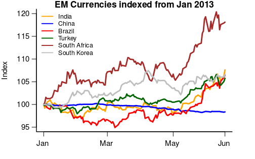
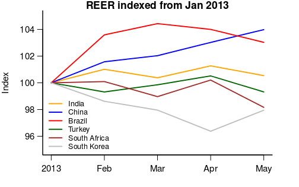

Don't try to control the rupee
Financial Express, 21st June 2013
Quantitative easing by the US Federal Reserve has been accompanied by high volatility in global financial markets. Most emerging market currencies have witnessed volatility since 2010. The rupee has been among them. In recent days the rupee has moved towards the level of 60 to a dollar. Figure 1 shows that while the Chinese renminbi has remained strong, other emerging economy currencies like those of Turkey, Brazil, South Africa and India have all depreciated in recent times, with most of them seeing a similar amount of depreciation. The South African rand has depreciated more, but the Indian rupee has moved as much as most of the other large emerging economies seen in the graph.
Given the scale of the phenomenon, the first point to note is that this is a global phenomenon. So, while India has its problems of policy paralysis and stalled investment projects, the rupee has not depreciated solely because of domestic issues. This is not to say that we should not have better economic policies, but to argue that on its foreign exchange policy what India needs is not to try to control the value of the rupee or its volatility in the foreign exchange market, as much as to understand what is the impact of these policies on growth and how can we make the economy resilient to sharp movements in the rupee.
 When the rupee moves, there are gainers and losers. Among the gainers are those who export to the world. Figure 2 shows the real effective exchange rate of the rupee. This shows that the rupee has not appreciated like the Chinese renminbi has, or depreciated like the South African rand has, but roughly remained stable. The real effective exchange rate is what determines export competitiveness. There has been domestic inflation in India, and what has kept Indian exports competitive is the rupee depreciation. If like the Chinese currency, the rupee had also not depreciated, today Indian exports would have been even less competitive. From the point of view of the exporters the depreciation has merely compensated for the higher domestic inflation in India. Exports have a positive impact on growth.
However, when we turn to the losers, there are two major categories of losers. First are importers, whose prices go up. To the extent that some of these importers are exporters, they get compensated. Others may pass on their higher costs and the consumer is the one who ultimately pays.
The second are companies who may have borrowed in dollars. If companies were mindful of which currency their revenues are primarily going to be in, then in the high volatility environment, companies with export revenue borrowing in dollars would not be in trouble as they would have a natural hedge. But if companies that were earning in rupees such as infrastructure companies saw an opportunity to borrow cheaply, and chose to take the currency risk on their balance sheets, they will be in trouble.
In this respect, the liberalisation of the external commercial borrowing regulations to allow infrastructure companies to borrow abroad was not sensible. Infrastructure companies facing difficult domestic conditions, stalled investment projects, difficulties in clearances, with balance sheets that are already troubled should have been discouraged from taking on foreign debt. Anyway, if companies chose to take the currency risk they will have to pay back more in rupees. Considering the high volatility in the market, the large current account deficit, the poor growth rate of the Indian economy, it is not obvious that many companies would choose to bet on a currency that could easily depreciate when capital flows out. The reduced confidence in the Indian rupee both on account of domestic policies and on the macro environment of low growth and high inflation was pointing to a possible depreciation of the rupee.
The economy performed poorly last year. While some estimates point to an increase in growth in the coming year, the high volatility in the rupee and the impact this will have on corporate balance sheets may indicate a performance weaker than what one might expect.
What should the policymakers do? At present, the only thing possible is to push through the long-promised reform measures on financial markets so that companies are able to hedge their risks and become resilient to shocks to the currency market.
Back up to Ila Patnaik's media page
Back up to Ila Patnaik's home page